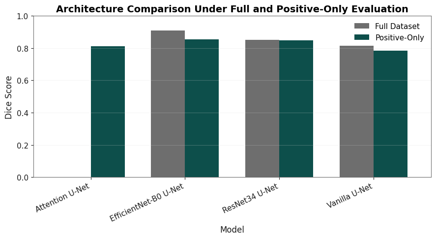
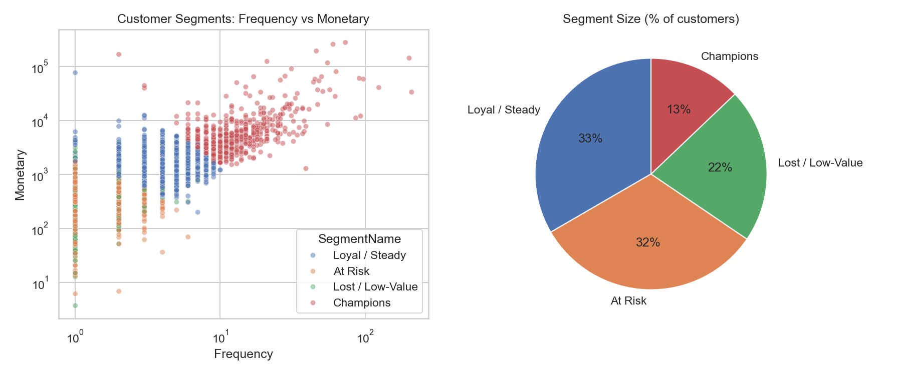
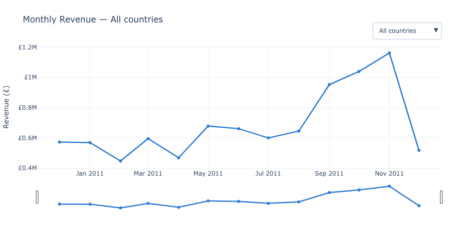
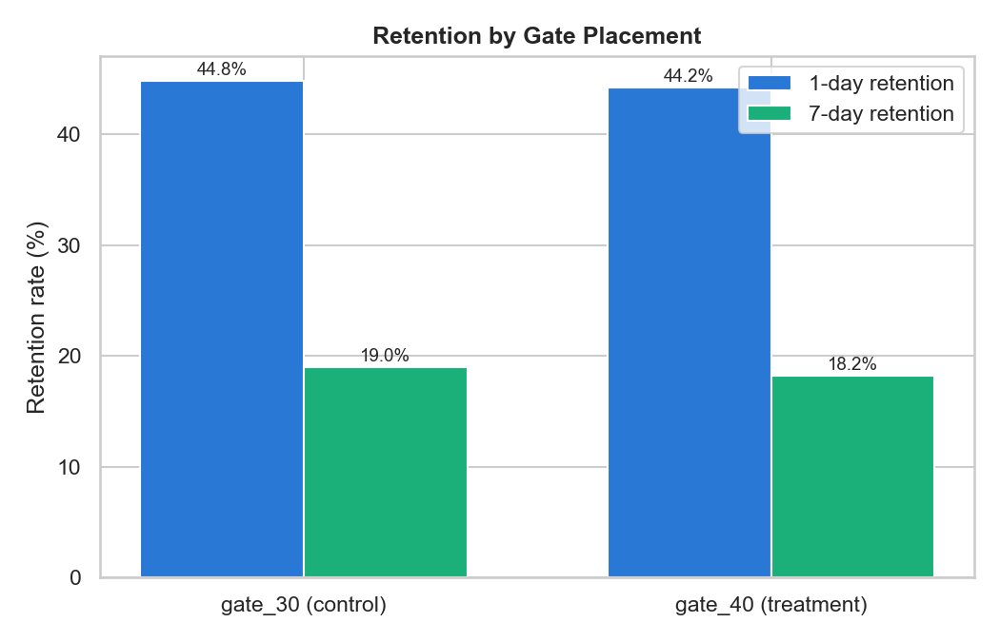

Portfolio · 2026
Projects


Data Visualization · Coursework
Scientific Data Visualization: Galaxy Simulation
315,372 particles from a galaxy formation simulation — a deliberate departure from business data, showing the same visualization judgment (and data-quality debugging) transfers to an unfamiliar domain.





Data Analyst · Interactive BI
Retail Sales Interactive Dashboard
Same data as Project 1, repackaged as a click-and-filter dashboard — country dropdown, metric toggle, choropleth map. Runs client-side, no server, works directly on GitHub Pages.

About
I'm an Information Management graduate looking for Data Analyst / Data Scientist roles. My background in information systems and databases informs how I approach data problems — from schema-level thinking about SQL queries to structuring unstructured text for analysis. Every project on this site uses a real dataset, runs end to end from raw data to a written recommendation, and includes the full notebook so you can check my work.